- AgentBoard's server kept a CPU core busy while sessions worked, draining the battery; now it does about a tenth of the work.
Why AgentBoard?
- Yes
- Partly
- No
- Not in its docs: its own site and docs don’t describe it
Scroll the table sideways for more tools
| Feature | AgentBoard | Pixel Agents | Crew | Notchi | Vibe Notch |
|---|---|---|---|---|---|
| Messages between sessions | Yes | Partly | Not in its docs | No | No |
| Shared decisions, plans, merge queue | Yes | No | Not in its docs | No | No |
| Subagents and workflow runs | Yes | Partly | Partly | No | Partly |
| Done tells the session to check | Yes | No | Not in its docs | No | No |
| History and search | Yes | No | Not in its docs | Partly | Partly |
| Warning before Claude Code deletes a session | Yes | No | Not in its docs | No | No |
| Jump to a session, approve prompts | Yes, Pro | Partly | Yes, Pro (Mac) | Yes | Partly |
| In view over other windows | Yes | No | Yes | Yes | Yes |
| Coding agents | Claude Code | Claude Code | Claude Code, GitHub Copilot CLI, Cursor | Claude Code and Codex | Claude Code |
| Where it runs | Main display, above the Dock; Apple silicon | VS Code or a browser; Windows, macOS, Linux | Bottom of the screen; Mac and Windows | MacBook notch; macOS 15+ | MacBook notch; macOS 15.6+ |
| Price | Free for one folder; Pro is coming | Free and open source (MIT) | Free; Pro $12 once on Mac | Free and open source (GPL‑3.0) | Free and open source (Apache 2.0) |
Checked from each tool’s own site, docs and code. On 26 October 2026: AgentBoard 2.7.3. On 13 October 2026, and the In view row on 14 October: Pixel Agents 1.4.1 and Crew 2.5. On 14 October 2026: Notchi 1.2.7 and Vibe Notch 1.3.2 (previously Claude Island).
What’s new
Every release, newest first, its changes marked new, improved or fixed. A change you can see comes with a picture, drawn by that release’s own code.
2.7
Find anything
Feature26 Oct 2026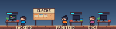
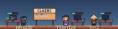
New With Pro, dress any session in any look, from the strip or Settings.
New
- Search looks in every tab and groups what it finds, with a count for each.
- Turn on the update check, and a dot on the menu-bar icon shows a new version.
- Hide from screen sharing keeps the strip on your screen but out of most shares.
Improved
- Plans fold: only the one that changed last opens, the rest are one line each.
- Settings comes in two parts: Workspaces and sessions, and App.
- Settings › Characters works from the keyboard, and VoiceOver reads each look by name.
Fixed
- Holding ⌥ to move the strip brought AgentBoard forward and could switch desktops; now you stay where you are.
- With several terminal windows open, Jump could pick the wrong one; now it brings the session's own window forward.
- Change look on a character's card closed before you could reach it; now the card stays open on the way up.
- The strip missed changes made while AgentBoard's server restarted, such as Pro turned on; now it catches up when it reconnects.
- A session moved to another desk kept its old shirt until the strip reloaded; now it changes at once.
Within reach
Feature15 Oct 2026New
- Permission prompts show in Needs you, word for word; with Pro, Allow or Deny them there.
- With Pro, Jump brings a session's terminal tab, tmux pane or app to the front.
- The strip comes in four sizes, 50% to 150%, on every plan.
- With Pro, hold ⌥ and drag the strip to any display; it stays there.
Fixed
- Bots a usage limit cut off lay on the floor all day; now they get up at your next prompt to their session.
- The name is now AgentBoard, capital B, in the app, its menus and the docs.
- AgentBoard.app replaces Agentboard.app when you drag it to Applications; the command and your boards stay.
Rooms
Feature13 Oct 2026

New Rooms replace crews. Sessions visit other rooms as guests, by message or by desk phone.
New
- Several boards per folder, joined only by
/agentboardor Settings; plans show in a Plans tab. - A free look, Áo cờ, after Việt Nam's flag, is the default and the app icon's.
Improved
- In Needs you, Done replaces Dismiss for hand-backs and PRs, and tells their session to check.
- Settings opens from the top bar; tick its session hooks again. The macOS notification is gone.
Fixed
- A workflow board kept its last run for good, all green even if it failed; now it says FAILED or STOPPED, and clears after ten minutes.
2.6
- A forked agent never showed on the strip; now it gets its bot beside its session from when it started.
- A workflow's agents left its board while working through a long step; now each stays there until it returns.
- Hide on a restarted session hid only its first transcript; now Settings lists each one, and hiding the session hides them all.
- A shade behind the strip read as a dirty band over light windows, and rounded corners cut off its floor; both are gone.
- A lit screen's middle line ran onto the monitor's frame; now it stays on the screen.
- Walking into a crew replayed its last few events, your prompts included, as if new; now only new events play.
- The strip redrew 60 or 120 times a second even when nothing moved; now it draws 15 while moving and 4 when still, saving battery.
Agents at work
Feature12 Oct 2026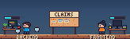
New Background agents get a bot of their own: dark, with gold eyes; workflow bots stay pale.
New
- Hover a session to see its workflows, each with its phase, and its agents.
- An agent that failed lies beside its session for a day.
Fixed
- A session's background agents only popped up as they started, so it looked idle; now they stay beside it while they work.
Every run on the board
Feature12 Oct 2026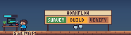
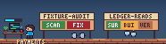
New A session working alone gets a board per workflow; cut-off runs stay red, agents lying down.
Improved
- Deletion warnings say nothing is deleted until your first Claude Code prompt after the date.
Fixed
- A workflow cut off partway, such as by a usage limit, looked finished; now the Workflows tab says where its agents stopped and why.
- Merged PRs stayed in Needs you; now they clear once the merge queue marks them merged or closed, and each PR is listed once.
- Prompts typed while a session was busy showed up late, and those with an image never did; now each shows when you sent it.
- The strip could replay an answer you gave long ago, or a renamed session's old events, as if new; now only recent ones play.
2.5
The wardrobe
Feature11 Oct 2026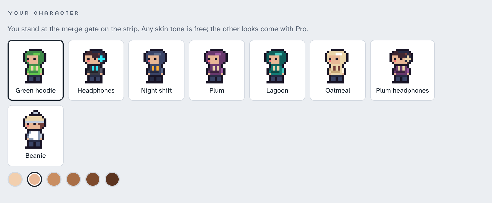
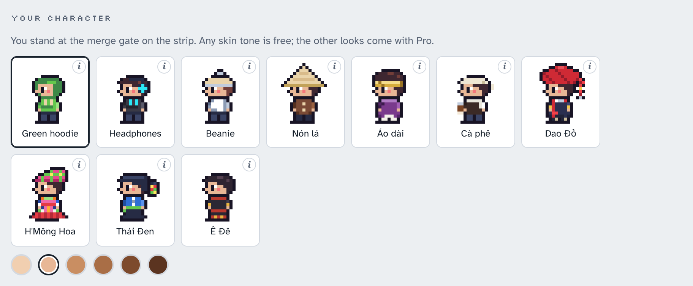
New Ten looks to wear at the gate, each with its story; faces now in profile.
Fixed
- Placeholders like
[Image #1]in your prompts were taken for PRs, and session names for tickets; they no longer are. - Clicking the workflow board of a session working alone opened Decisions; now it opens Workflows, and hovering shows the run.
2.4
Watching a crew
Feature11 Oct 2026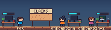
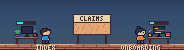
Improved One character per session, at the same desk all day, named from its title's key word.
New
- Take a session off a crew with Leave in Settings, or
agentboard leaveinside it.
Improved
- Needs you lists each thing once, in the order the actions must happen.
Fixed
- Things a board's sessions handed back to you vanished from Needs you whenever Agentboard restarted; now they stay until done.
- Decisions logged with impossible times, such as hours ahead, showed out of order; now they're placed by when they were written.
2.3
Crews you can read
Feature11 Oct 2026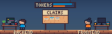
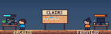
New A context bar over each desk replaces the token panel; hover it for today's tokens.
New
- Settings lists each crew with its members and board; crews can be renamed.
Improved
- Connect or disconnect the usage limits with a button in Settings.
Fixed
- A session telling another it 'needs your review' showed a Needs you bubble, as if meant for you; now it shows an Ask bubble.
- Walking into a crew could show its gate with no crates or count until something new arrived; now they show at once.
2.2
Free and Pro
Feature11 Oct 2026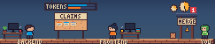
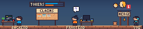
New See who is working and who waits on you, and pick your own look.
New
- Needs you warns 7, 3 and 1 day before Claude Code deletes a session.
- Pro, a one-time licence, adds every folder, all history, summaries, the usage clock, sounds and looks.
- The free plan covers one folder and the last 7 days.
Improved
- A session renamed with
/renamein Claude Code takes its new name on the strip.
Fixed
- PRs waiting to merge vanished from Needs you when the merge queue named their state in its own words; now they show.
2.1
Crews
Feature11 Oct 2026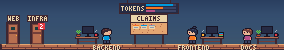
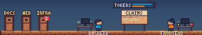
New Sessions that work together share a strip; one working alone gets its own door.
New
- Each crew has its own Conversation, Decisions and Needs you, so unrelated sessions no longer mix.
- Several sessions without a board get an empty one; the panel offers to start it.
Improved
- Idle crews go under Earlier in the picker, with a door only when something waits there.
Fixed
- A strip opened before any workspace was added never showed one until reloaded; now it appears at once.
2.0
macOS app
Feature11 Oct 2026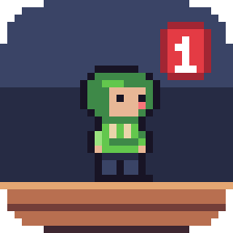
New Agentboard is a Mac app; its icon is you in the green hoodie, counting what waits.
New
- Drag Agentboard to Applications; it runs on Apple silicon and lives in the menu bar.
Improved
- Everything comes inside the app, the command line too; link it onto your PATH.
Fixed
- A PR written like
web#12was filed under the folder's own repo; now it goes underweb.
Before the app0.1 to 1.4, before AgentBoard was a Mac app
- 1.4.0 11 Oct 2026 npm package Installs from one package; the agentboard command opens the strip.
- 1.3.0 11 Oct 2026 Start a board Several sessions in one folder? One click puts a board between their desks.
- 1.2.0 11 Oct 2026 One session, the wall, sounds A session alone shows its workflow's phases; the wall shows tokens and your limits.
- 1.1.0 11 Oct 2026 Workspaces Doors to your other workspaces, each counting what waits on you there.
- 1.0.0 11 Oct 2026 Daily driver Search everything your sessions said and decided, from the panel's header.
- 0.4.0 11 Oct 2026 Needs you, workflows, board The gate counts what waits on you; the Needs you tab lists it.
- 0.3.0 11 Oct 2026 Strip Your sessions at their desks above the Dock, every event played as it happens.
- 0.2.0 11 Oct 2026 Panel The panel: your sessions' messages, decisions and PR threads, live.
- 0.1.0 11 Oct 2026 Reading your sessions Agentboard starts reading what your sessions write; nothing to look at yet.